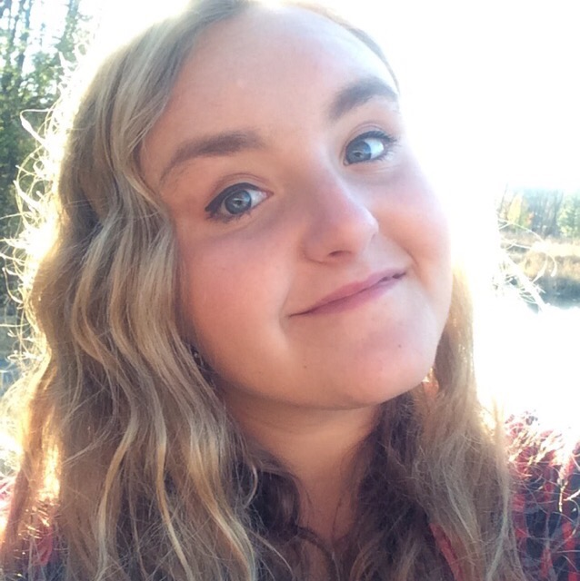

Rosemary Belson
☰
Page 2
Assignment 1
Portfolio Site
Page 3
Page 4
Page 5
Page 6
Welcome to my page
I am a junior in the convergence
emphasis
area.
How do you organize a space party?
You planet.

Basic map embed
Basic map embed